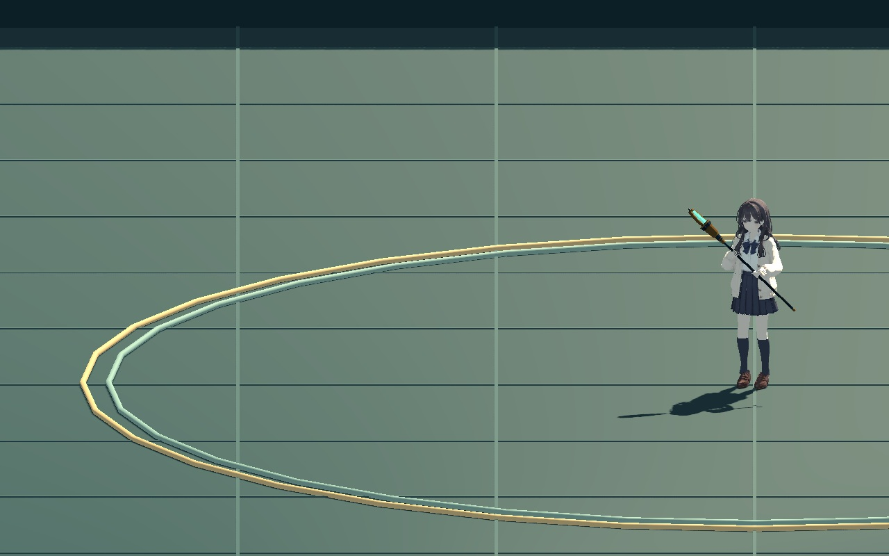

WITCH / SKILL ART / 2026.10.31
스프링 돌진 · 낮은 도약
제공한 Unarmed Jump의 움츠림·무릎 접기·착지 흐름을 현재 캐릭터에 옮겼습니다. 스프링판을 박차고 낮은 포물선을 그리며 앞으로 도약하고, 두 손으로 지팡이를 잡은 채 착지합니다.
낮은 도약 약 32cm기존 돌진 0.2초 유지착지 자세 0.12초양손 지팡이 유지

대기0.000초1 / 61
측면에서 실제 돌진 경로와 낮은 도약을 확인합니다. 0.25배 재생으로 이륙과 착지를 자세히 볼 수 있습니다.
파일과 확인 범위
사용자가 제공한 Unarmed Jump FBX의 몸통·다리 동작을 축소하고 현재 양손 지팡이 자세에 맞췄습니다. 원본의 이동 곡선은 게임에 적용하지 않고, 기존 지상 돌진 위에 시각적인 포물선을 더합니다. 기존 발동·마나·재사용 대기·거리·충돌·피격 판정은 유지합니다.
Blender 저장본 97개 정수/반 프레임, 런타임 404개 검사와 488장 실제 게임 렌더를 기록했습니다. 캡처 재생은 무음입니다. 이번 화면은 외형 검토용이며 임의 의상 접촉이나 최종 성능 승인을 뜻하지 않습니다.